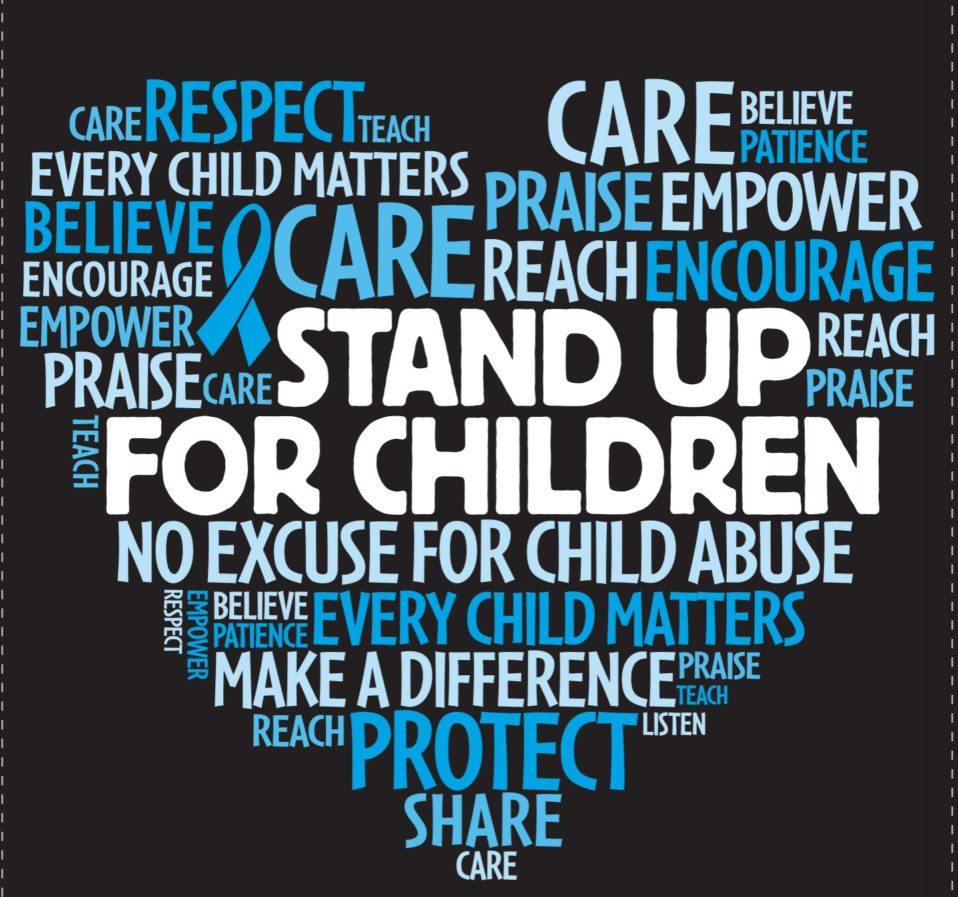

Child trauma is something violent to kids younger than 18. If something trauma happens at a young age it overwhelms the kid and they start to feel hopeless. Trauma hits strong emotion to the specific event the child will enable a reaction like feeling hopelessness, fear and heart beating fast. Children are very vulnerable to stress what would stress out a kid wouldn’t stress out an adult. Trauma hits strong emotion to the specific event the child will enable a reaction like feeling hopelessness, fear and heart beating fast. Child trauma can include
If a child grows up with a lot of stress, their body can’t grow properly. In some cases, people can be put in a stressful situation and start to breath fast, heart pounding or have a panic attack. Kids with a history of trauma develop with chronic and recurring physical pain. Like headaches or stomach aches. Kids can also have emotions responses it’s hard for them to handle, identifying and expressing their emotions. They can also get anger, sadness, depression. They have a hard time calming down and they can be triggered by something that reminds them of the event.
There are ways to help a child if they experienced trauma. Like having a person in your life to talk to. Relationships are very important it helps kids with emotional connection and to help build trust with people. It also helps them feel not alone. Also, encourage them to socialize with other kids. Listen to them and let them express their feelings. Keep the kid in a routine so its not chaos or change frequently. Be understanding to the kids emotions if they are sad, angry,or feel guilty. Not every person's reaction to the same event.